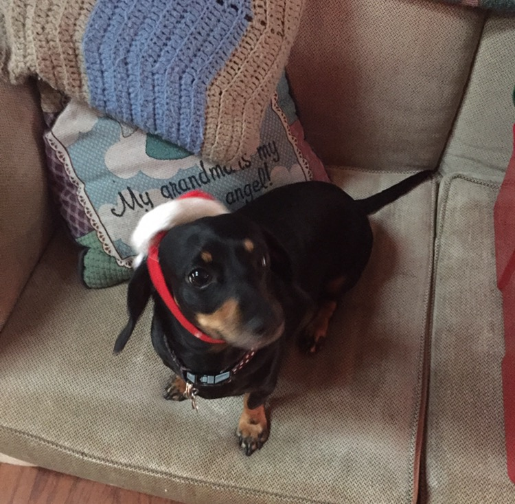

Scooter was my first dog that we got when we stumbled upon her at Seven Mile Fair which is a combination between a farmers market and a flee market. She is now 13 years old and is extremely lovely. She is very soft and doesn't bark much. She has had some rough problem with her back and spine, including slipping a few discs. At this point my family has put a lot of love and money into her that it is going to be rough when it is time for her. She has had many nicknames that were derivatives of Scooter, but the one that has stuck the best throughtout the years is "Boots". There is not any significance to this name, but it is just what feels right to everyone when addressing her.
We got Buster a few years after the passing of another dog we had. We got him from a pet store in Southeast Wisconsin called Pet Land. He is a bit more of a handfull than Scooter is, with multiple skin and coat issues, as well as struggling with major anxiety issues. He cannot handle thunderstorms at all, and freaks out whenever he sees anyone outside the window. He also get extremely nervous when everyone leaves the house or when we take Scooter to the vet but leave him behind. While he does struggle with these issues, he is the cuddliest dog you'll ever meet. If he becomes friends with someone, he will stay attached at the hip, and lay on them and cuddle up to them at any given chance.